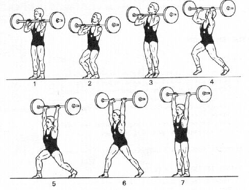
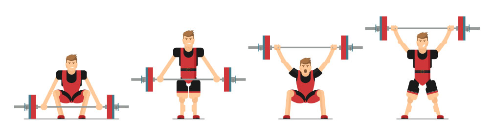

Bien s'équiper pour faire de l’haltérophilie
Lorsque vous faites de l’haltérophilie, vous en pratiquez généralement dans une salle de sport puisqu’il est essentiel d’avoir à disposition un nombre de poids importants. Il est assez rare que les personnes puissent réaliser une salle pour pratiquer de l’haltérophilie chez eux..
Sommaire :
1 - Quels sont les risques de l’haltérophilie et les différentes blessures possibles ?
2 - Haltérophilie : l’Épaulé-jeté et l’arraché
3 - Débutant ou expert, trouvez LE programme d’haltérophilie qui vous correspond
4 - Les équipements essentiels
4.1 - Les leggings
4.2 - Une trousse de secours
4.3 - La magnésie
4.4 - Les sangles de tirage
1 - Quels sont les risques de l’haltérophilie et les différentes blessures possibles ?
L’haltérophilie est un sport exigeant qui sollicite intensément les articulations, les tendons et les muscles. Les blessures les plus fréquentes touchent les épaules, le bas du dos, les poignets et les genoux. Un mauvais échauffement ou une mauvaise technique peuvent augmenter considérablement ces risques. Il est essentiel de s’équiper correctement et d’adopter une bonne posture pour prévenir les blessures.
2 - Haltérophilie : l’Épaulé-jeté et l’arraché
L’épaulé-jeté diffère un peu de la discipline précédente. En effet, il faut soulever la barre en deux façons différentes. Tout d’abord dans la position 5 puis dans la position 7. Par définition, l’épaulé-jeté signifie de soulever la barre au-dessus de sa tête en deux fois. Voici les deux mouvements de l’haltérophilie en image, vous pouvez retrouver plus d’explications encore sur des vidéos YouTube qui montrent exactement comment le mouvement est réalisé. Vous pouvez aussi regarder les différentes compétitions qui ont eu lieu si ce sport vous intéresse. Enfin, il est important de préciser l’existence de l’haltérophilie handisport qui permet aux personnes en situation de handicap de pratiquer ce sport. C’est un sport qui est plus accessible que ce que l’on pourrait penser. Mais il faut bien évidemment faire attention aux blessures potentielles et donc prévenir de tous les risques. Avec le bon équipement, les bons conseils et la bonne posture. Pour finir, le programme d’haltérophilie doit être adapté à vos objectifs, à vos conditions physiques, etc.
Comme le montre l’image ci-dessus, l’arraché se découpe en plusieurs phases même si on en distingue principalement deux. Sur un plan vertical, il faut soulever la barre au maximum, puis, il faut passer sa tête sous la barre. Ces deux gestes sont très techniques et il faut bien exécuter la première étape avant de commencer la deuxième. L’arraché, par définition, signifie de soulever en un seul mouvement la barre au-dessus de la tête, bras tendus vers le haut.
3 - Débutant ou expert, trouvez LE programme d’haltérophilie qui vous correspond
🏋️ Le Full-body : un programme pour débutant
Voici le programme haltérophilie full-body pour le gain de masse musculaire, destiné aux débutants qui veulent travailler la totalité du corps. Il s’agit d’un programme de musculation à faire 2 à 3 fois par semaine, sur 2 à 3 mois.
- Tractions (ou tirage devant) : 4×12 – biceps, dorsaux
- Développé couché : 4×12 – épaules, pectoraux, triceps
- Développé haltères : 4×12 – triceps, épaules
- Squat barre nuque (ou presse à cuisse) : 4×12 – fessiers et cuisses
- Planche : 3×1 min + Crunch au sol : 4×10 – abdominaux
- Banc à lombaires : 3×1 min – lombaires
Ce programme haltérophilie a fait ses preuves. Inutile d’en rajouter ! En musculation, la qualité prime sur la quantité.
🔥 Le Split : un programme pour les experts
Séparer les groupes musculaires pour plus d'intensité. Temps de repos plus long, mais gains optimisés. Idéal pour les pratiquants expérimentés.
🗓️ Programme Split 3 jours :
Jour 1 : Pectoraux, Biceps, Abdominaux
- Pectoraux : développé couché barre 5×10, développé incliné haltères 3×8, écartés couchés 3×12, pull-over 2×20
- Biceps : curl barre 4×10, curl concentré 3×12, curl haltères 4×8
- Abdos : planche 3×1 min, crunch 4×20, flexions latérales 4×12
Jour 3 : Cuisses, Fessiers, Mollets
- Cuisses/fessiers : extensions de jambe 3×12, squat 6×12, leg curl 3×15, soulevé de terre jambes tendues 4×10
- Mollets : mollets assis 4×20, mollets debout
Jour 5 : Dos, Épaules, Triceps
- Dos : tractions 5×10, shrug barre 3×12, rowing 4×8, lombaires lestés 3×1 min
- Épaules : élévations latérales 3×10, développé haltère 4×12, oiseau 3×10
- Triceps : extensions au-dessus de la tête 3×10, barre front 4×10, poulie haute 2×12
💡 Quelques conseils
- Commencez toujours par les grands mouvements (développé couché, squat, tractions)
- Alternez machines, poids libres, haltères et poids du corps
- Évitez de travailler bras + dos ou bras + pecs sur deux jours consécutifs
- Travaillez vos points faibles en début de séance
- Soignez votre posture pour prévenir les blessures
4 - Les équipements essentiels
4.1 - Les leggings
Les leggings d’haltérophilie offrent un bon maintien musculaire et permettent une grande liberté de mouvement. Ils sont souvent conçus avec des tissus résistants pour supporter les frottements de la barre.
4.2 - Une trousse de secours
Toujours avoir une trousse de secours à proximité est indispensable. Elle doit contenir du strap, des pansements, du désinfectant, et éventuellement des poches de froid instantané pour les petites blessures.
4.3 - La magnésie
La magnésie permet d’absorber la transpiration des mains et améliore la prise sur la barre. Elle est particulièrement utile lors des mouvements lourds ou lors de séries longues.
4.4 - Les sangles de tirage
Les sangles de tirage aident à maintenir une bonne prise sur la barre pendant les tractions lourdes. Elles sont surtout utilisées pour les mouvements d’assistance comme les tirages ou les soulevés de terre, mais à éviter en compétition.